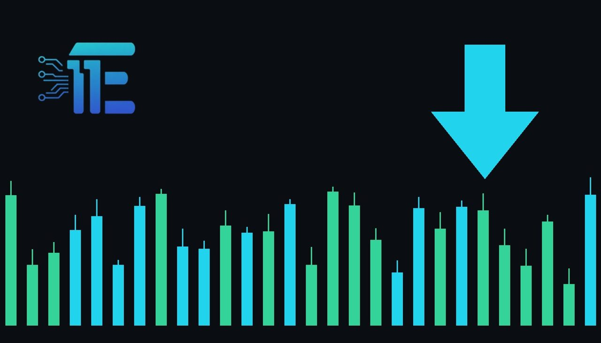

Gold Slides As Inflation Concerns And Rate Hike Fears Growតម្លៃមាសធ្លាក់ចុះខណៈក្តីបារម្ភពីអតិផរណា និងអត្រាការប្រាក់កើនឡើង
XAU/USD impact: ▼ Bearishផលប៉ះពាល់លើ XAU/USD: ▼ ធ្លាក់

Gold futures opened lower on Friday, dropping over four percent in the last five days amid growing concerns. Hawkish central bank remarks and rising inflation fears put significant downward pressure on the metal.
តម្លៃមាសបានបើកធ្លាក់ចុះនៅថ្ងៃសុក្រ ចំពេលមានក្តីបារម្ភខ្លាំងពីអតិផរណា និងការរំពឹងទុកលើគោលនយោបាយរូបិយវត្ថុតឹងរ៉ឹង។ ការណ៍នេះបានដាក់សម្ពាធយ៉ាងខ្លាំងមកលើតម្លៃមាសនៅក្នុងទីផ្សារ។
Gold futures opened at $3,883.30 per troy ounce on Friday, November 13, 2026, marking a 2.8 percent decline from the previous session's opening price. The metal has experienced a notable downturn, falling over 4 percent across the preceding five days of trading before staging a minor recovery to $3,898.30 per troy ounce in early morning activity.
កិច្ចសន្យាអនាគតមាសបានបើកក្នុងតម្លៃ 3,883.30 ដុល្លារអាមេរិកក្នុងមួយអោននៅថ្ងៃសុក្រ ទី13 ខែវិច្ឆិកា ឆ្នាំ2026 ដែលបង្ហាញពីការធ្លាក់ចុះ 2.8 ភាគរយបើធៀបនឹងតម្លៃបើកកាលពីថ្ងៃព្រហស្បតិ៍។ មាសបានធ្លាក់ចុះជាង 4 ភាគរយក្នុងរយៈពេលប្រាំថ្ងៃចុងក្រោយនេះ មុនពេលងើបឡើងវិញបន្តិចមកត្រឹម 3,898.30 ដុល្លារអាមេរិកក្នុងមួយអោនក្នុងអំឡុងពេលជួញដូរពេលព្រឹក។
The downward momentum in XAU/USD stems directly from intensifying concerns over monetary policy tightening. Policymakers have expressed unease regarding persistent price pressures, noting that the central bank still has significant work to do to control inflation and suggesting that further policy action may be required.
សម្ពាធធ្លាក់ចុះមកលើ XAU/USD នេះកើតចេញពីការព្រួយបារម្ភយ៉ាងខ្លាំងជុំវិញការរឹតបន្តឹងគោលនយោបាយរូបិយវត្ថុ។ មន្ត្រីធនាគារកណ្តាលបានបង្ហាញពីក្តីបារម្ភអំពីទិន្នន័យអតិផរណាថ្មីៗ ដោយបញ្ជាក់ថាធនាគារកណ្តាលនៅមានការងារជាច្រើនទៀតដែលត្រូវធ្វើលើបញ្ហាអតិផរណា និងទំនងជាត្រូវចាត់វិធានការបន្ថែម។
Transmission of this economic sentiment to gold typically occurs through the channels of the US dollar and Treasury yields. When officials signal that monetary policy may remain restrictive or feature further rate increases, real yields and borrowing costs rise, reducing the relative appeal of non-yielding bullion while boosting the currency.
ការបញ្ជូនឥទ្ធិពលនេះទៅកាន់ទីផ្សារមាស ឆ្លងកាត់តាមរយៈតម្លៃប្រាក់ដុល្លារអាមេរិក នៅពេលដែលមន្ត្រីផ្ដល់សញ្ញាថាអត្រាការប្រាក់អាចនឹងត្រូវដំឡើងបន្ថែម ការរំពឹងទុកនេះធ្វើឱ្យតម្លៃប្រាក់ដុល្លារ និងទិន្នផលរតនាគារកើនឡើង ដែលធ្វើឱ្យមាសមានភាពទាក់ទាញតិចជាងមុន។
A balanced perspective reveals opposing forces for market participants to evaluate. Persistent price pressures and hawkish policy signals tend to pressure prices downward by strengthening currency values and raising yields. Conversely, ongoing economic uncertainties can revive safe-haven demand and offer price support.
ទស្សនៈមានតុល្យភាពបង្ហាញពីកត្តាផ្ទុយគ្នាដែលអ្នកជួញដូរត្រូវពិចារណា។ សម្ពាធអតិផរណា និងសញ្ញាគោលនយោបាយតឹងរ៉ឹងមានទំនោរដាក់សម្ពាធចុះក្រោមលើតម្លៃមាសតាមរយៈការកើនឡើងនៃតម្លៃប្រាក់ដុល្លារ។ ប៉ុន្តែភាពមិនប្រាកដប្រជាសេដ្ឋកិច្ចផ្សេងទៀតក៏អាចផ្តល់ការគាំទ្រដល់មាសផងដែរ។
Traders monitoring the XAU/USD pair should closely watch upcoming economic data releases, official statements regarding monetary policy adjustments, and broader currency movements. These indicators will provide vital context for determining whether the metal can sustain a recovery or face renewed selling pressure.
អ្នកជួញដូរដែលតាមដានគូប្រាក់ XAU/USD គួរតែតាមដានយ៉ាងដិតដល់នូវទិន្នន័យសេដ្ឋកិច្ចថ្មីៗ សេចក្តីថ្លែងការណ៍របស់មន្ត្រីធនាគារកណ្តាល និងចលនានៃប្រាក់ដុល្លារអាមេរិក ដើម្បីជាមូលដ្ឋានក្នុងការវិភាគទិសដៅទីផ្សារបន្តទៀត។
Key takeawaysចំណុចសំខាន់ៗ
- Gold futures opened lower on Friday, dropping over 4 percent over a five-day span.
- តម្លៃមាសបានបើកធ្លាក់ចុះនៅថ្ងៃសុក្រ ដោយបានធ្លាក់ចុះជាង 4 ភាគរយក្នុងរយៈពេលប្រាំថ្ងៃចុងក្រោយ។
- Policymakers highlighted ongoing inflation concerns, reinforcing expectations of tighter monetary conditions.
- មន្ត្រីធនាគារកណ្តាលបានបង្ហាញពីការព្រួយបារម្ភអំពីអតិផរណា ដែលធ្វើឱ្យការរំពឹងទុកលើអត្រាការប្រាក់កាន់តែមានភាពតឹងរ៉ឹង។
- Higher interest rate expectations and shifting yields remain key drivers influencing bullion values.
- ការរំពឹងទុកលើអត្រាការប្រាក់ និងទិន្នផលប័ណ្ណបំណុលគឺជាកត្តាចម្បងដែលជំរុញចលនាតម្លៃមាសក្នុងពេលនេះ។
Original commentary by THE MARKET CODE, based on public reporting from Finance. Written with the help of AI. Educational only, not financial advice.
មតិវិភាគដើមដោយ THE MARKET CODE ផ្អែកលើការរាយការណ៍សាធារណៈពី Finance។ សរសេរដោយមានជំនួយពី AI។ មាតិកាអប់រំប៉ុណ្ណោះ មិនមែនជាដំបូន្មានហិរញ្ញវត្ថុទេ។